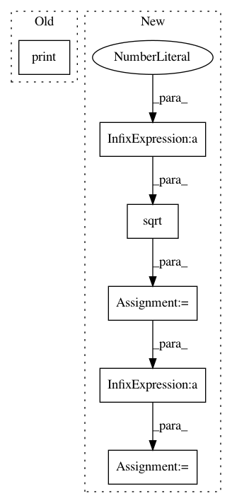

a00159cee56a3a8613292b1400c397207d8ae2db,pandastable/plotting.py,PlotViewer,scatter,#PlotViewer#Any#Any#Any#Any#,309
Before Change
def scatter(self, df, ax, alpha=0.8, marker="o", **kwds):
A more custom scatter plot
print (kwds)
if len(df.columns)<2:
return
df = df._get_numeric_data()
cols = df.columns
After Change
if marker == "":
marker = "o"
if kwds["subplots"] == 1:
size=plots-1
nrows = round(np.sqrt(size),0)
ncols = np.floor(size/nrows)
print (plots,nrows,ncols)
self.fig.clear()
for i in range(s,plots):
y = df[cols[i]]
In pattern: SUPERPATTERN
Frequency: 3
Non-data size: 6
Instances
Project Name: dmnfarrell/pandastable
Commit Name: a00159cee56a3a8613292b1400c397207d8ae2db
Time: 2015-07-25
Author: farrell.damien@gmail.com
File Name: pandastable/plotting.py
Class Name: PlotViewer
Method Name: scatter
Project Name: bashtage/linearmodels
Commit Name: 34e7e918bd4fc09f643e8bb448e875a9bcb7e841
Time: 2017-03-29
Author: kevin.k.sheppard@gmail.com
File Name: experiment.py
Class Name:
Method Name:
Project Name: ricsinaruto/Seq2seqChatbots
Commit Name: e801c195eca0e136b6766990e3e2379708eb4dd6
Time: 2018-09-28
Author: ricsinaruto@hotmail.com
File Name: t2t_csaky/scripts/hred_metrics.py
Class Name:
Method Name: similarity